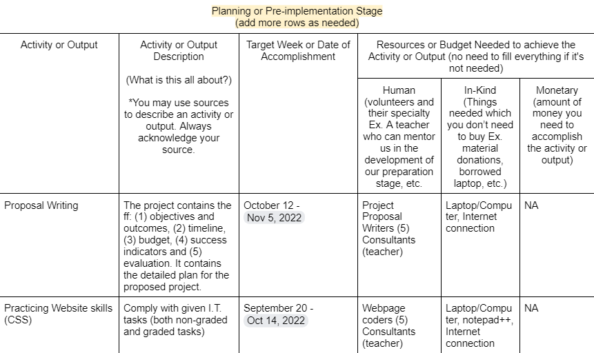
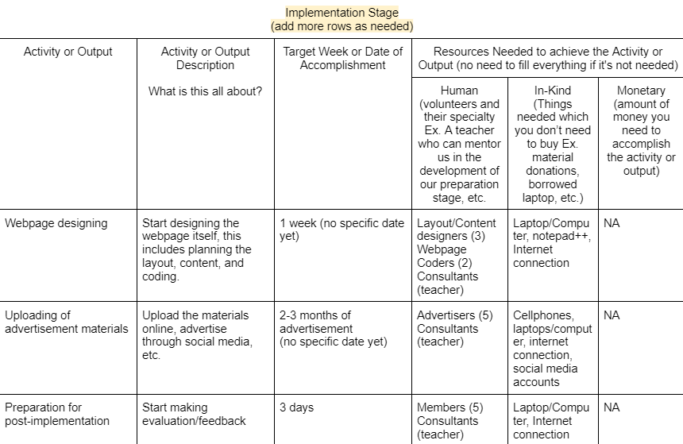
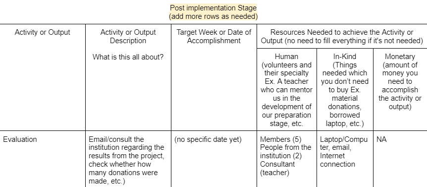
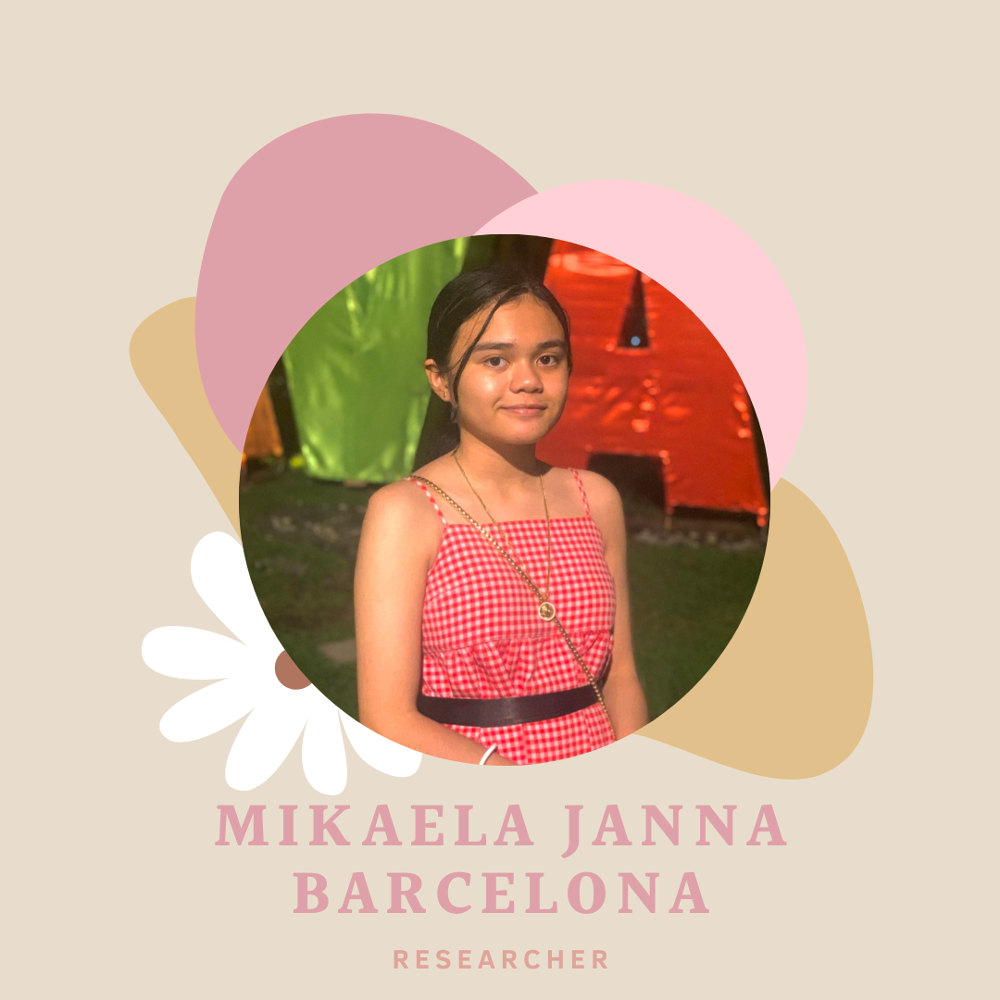

Background and Significance of the Study
PROJECT SUMMARYOur goal is for people to be informed about HIV/AIDS and its causes and effects. We want people (everyone in the community especially teenagers) to understand how HIV spreads through sexual contact, illegal injectable drug use, needle sharing, contact with contaminated blood, and transmission from mother to child during pregnancy, delivery, or nursing. Also, how it can have a long-term impact on your immune system and your life. We want to prevent infection by practicing healthy sexuality. Healthy sexuality requires knowing and being able to express one's sexuality in ways that benefit one's life. It means approaching sexual interactions and relationships with consent, respect, and knowledge.

COMMUNITY PROFILE
The Mindanao Advocates Against AIDS, Inc (MAAAI) exists in order to fight against one of the well-known issues in Mindanao; STI-HIV/AIDS. Its advocacy is to control the cases of AIDS hence this institution aims to educate Bisayas/Davaoeneos about AIDS; bring upon knowledge on how to prevent this, especially for minors, as this is a common issue present in the community. The MAAAI provides programs and services such as HIV Testing services (HIV Counseling & Testing); STI (Sexually Transmitted Infections) management and treatment; Lectures on Teenage Pregnancy, STI/HIV-AIDS, SOGIE (Sexual Orientation, Gender Identity & Expression), Community-based Screening (CBS); HIV Treatment; and, Young People Training on HIV/SOGIE/Stigma & Discrimination. The institution has HIV Testing services, an STI Laboratory, and HIV Treatment as part of our physical facilities. The primary beneficiaries of this institution are mainly education and prevention of AIDS which can where in this way we can establish a healthier community.
RATIONALE
Our rationale for our actions is that in our opinion if we are able to properly inform everyone of the diseases origin, spread rate, ways to get infected and its cause and effects we should be able to help minimize the amount of people who are uneducated of the diseases increasing awareness while also helping people understand why they should be aware and cautious of the disease and giving them ways on how they could prevent and minimize the chances that they are going to come in contact with the disease and possibly get infected allowing us to reduce and minimize the amount of people getting infected slowly every year until the disease is hopefully eradicated from the area/location.
PROJECT OBJECTIVE
The main goal of our project is a move wherein we encourage people to learn more about MAAAI and help the institution with the lack of necessities such as food through website making and sharing posters through social media.
1.)To promote how to prevent AIDS.
2.)To promote the services of MAAAI.
3.)To promote the needs of MAAAI (food, toiletries, etc.)
4.)To reach 50 people about this matter.
PROJECT OUTCOME
1. The primary outcome is that Mindanao would evolve into a healthy community.
 2. People would be well-educated about AIDS; how to prevent it, risk factors and the like.
2. People would be well-educated about AIDS; how to prevent it, risk factors and the like. 3. MAAAI would be provided with necessities for the people in the institution (with HIV/AIDS).
4. Collaboration for this communal issue can help find more ways to aid the disease.
5. People with this disease would be properly aided hence will lessen the risk of complications of this disease.
6. The project success will be measured with the following indicators: number of patients confined in the institution, number of people educated about AIDS, and number of donations.
7. We can help the members of MAAAI to attain their goal/advocacy from advertising.
PROJECT OUTPUTS
1.)There will be a better method to diagnose people with and without HIV/AIDS.
2.)There will be a better mode of sustenance for both medicine and other necessities for MAAAI such as food, clothing, and toiletries.
3.)There will be less HIV/AIDS cases in Mindanao.
PROJECT OUTPUTS



 SUCCESS INDICATORS
SUCCESS INDICATORSOur desired outcome is for people to be informed and aware of HIV/AIDS and its causes and effects. We wish for people to understand how it is transmitted through sexual contact, illicit injection drug use, sharing needles, contact with infected blood, from mother to child during pregnancy, childbirth, or breastfeeding. And also how it can affect your immune system and your life in the long run. We desire to prevent the virus through a healthy sexuality. Healthy sexuality entails possessing the knowledge and ability to express one's sexuality in ways that improve one's life. It entails addressing sexual interactions and relationships from a consenting, respectful, and educated standpoint.
ABOUT THE WEB DESIGNER
Mikaela Janna Barcelona - Researcher
One is the main contributor to grammatical error fixes of her group projects. One is very fond of music, mostly rock, metal, and indie genres. One likes to bake in her free time, making all sorts of things ranging from oatmeal muffins to strawberry mochi. One excels in art, specifically drawing things such as people and other humanoid creatures. Lastly, one also likes to play games such as rhythm games, platformers, and RPG (roleplaying game) games. (If you ever meet me in the hallways of the school, please say hi! I’d love to make a new friend and talk to you about things like anime, cartoons, and music preferences!)
Back to Top